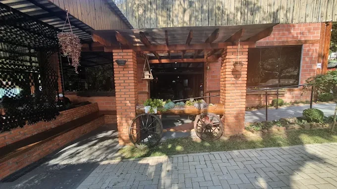
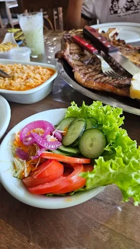
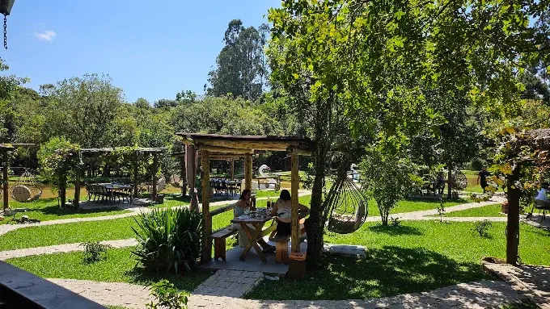
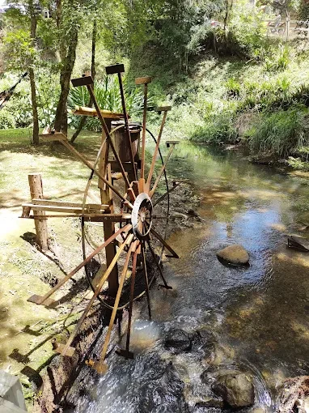
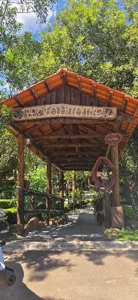
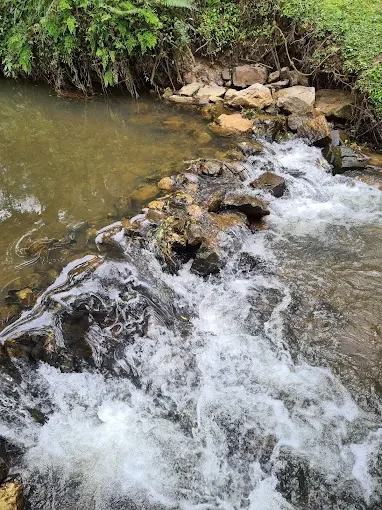
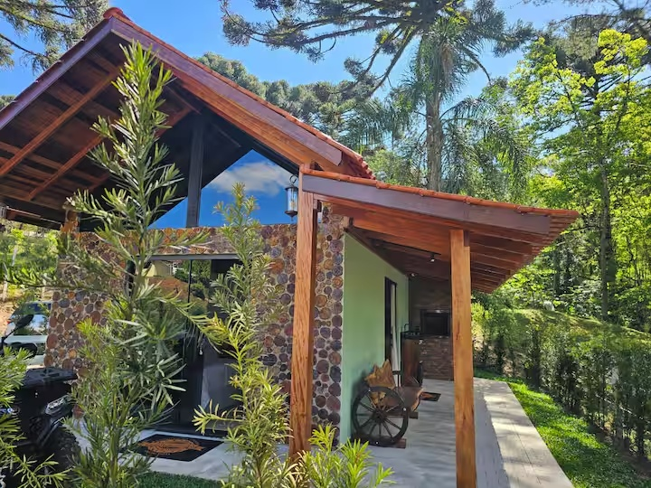
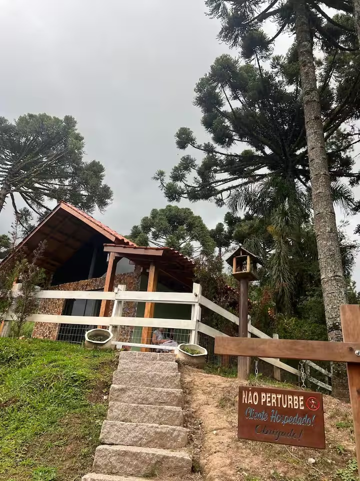

O destino é tão especial quanto o almoço.
Em Bateias, a experiência começa antes de chegar à mesa: arquitetura acolhedora, jardins, áreas abertas e o prazer de aproveitar o dia sem pressa.
Conheça o espaço ↗O melhor momento acontece à mesa.
Sabores para compartilhar, boa conversa e aquele almoço que vira lembrança.

Um refúgio em meio à natureza.
Jardins, lago, espaços ao ar livre e cenários reais do Melhor Opção.






O passeio termina. A experiência não precisa.
Imagine aproveitar a natureza sem ter pressa de voltar para casa. Descubra o Chalé das Araucárias, uma opção de hospedagem para prolongar os momentos especiais.
Conheça os ambientes internos, a fachada e todas as fotografias reais do chalé diretamente no anúncio oficial.
⌂ VER FOTOS E DISPONIBILIDADE NO AIRBNB ↗Fotografias reais do Chalé das Araucárias. Consulte as datas disponíveis e faça sua reserva pelo Airbnb.
Seu próximo passeio começa aqui.
Bateias, Campo Largo, Paraná. Planeje o trajeto, entre em contato e venha conhecer o Melhor Opção.